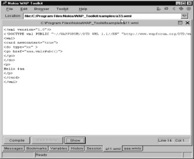

8
WMLBrowser
This chapter talks about
the WMLBrowser. WMLBrowser is a library that deals exclusively with the Browser
environment. This chapter deals with the various functions that deal with the
Browser environment. It also explains how to create a variable; how to obtain
the value of a variable; how WMLScript and WML work with each other; and how
the program control passes from WML to WMLScript and back.
Earlier, we had discussed
two functions - one called getVar and the other called setVar. The function
getVar returns the value of the variable. But if the variable doesn't exist, it
doesn't give you an error, it simply returns null. If the value of the variable
is invalid, i.e. if the variable name is incorrect or if it contains a space,
then the function will return an invalid value, otherwise it will return a
string. Remember that even though the
variable value is a number, it will return a string. We have already informed
you that there is a seamless conversion between numbers and strings. The
function getvar returns a null string
if the variable doesn't exist.
|
Screen 8. 1 |
aaa.wmls
extern function abc()
{
var aa;
aa=WMLBrowser.setVar("aaa","Hi");
if ( aa)
Dialogs.alert("true");
else
Dialogs.alert("false");
}
If you input a wrong
variable name, for instance- a space, it will return an invalid value;
otherwise, it returns a string. Even if the variable contains a number, or a
boolean (true or false) value, it will still return a string. This conversion
from number to string, and from boolean to string takes effect
automatically.
The function setVar will
always return a true, if it is able to accomplish what you ask it to do. In our
example, setVar has been asked to create a variable called aaa.
· If the variable already
exists, it is given the specified value, in this case it is "hi".
· But, if the variable
doesn't exist, it is freshly created.
This is all that the setVar
function does. Actually, it should have aptly been called as createVar because,
if the variable doesn't exist, it creates it.
In this case, our variable aa doesn't exist. So, the function
Dialogs.alert gets called.
We learnt about go href in
the WML section. With go you could navigate from one card to another. A similar
function is available in the WMLBrowser library. The next program demonstrates
it.
|
Screen 8. 2 |
aaa.wmls
extern function abc()
{
WMLBrowser.go("a33.wml");
}
a33.wml
<?xml version="1.0"?>
<!DOCTYPE wml PUBLIC "-//WAPFORUM//DTD WML 1.1//EN" "http://www.wapforum.org/DTD/wml_1.1.xml">
<wml>
<card>
<p>
Hi $aa
</p>
</card>
</wml>
|
 |
|
Screen 8. 3 |
Just as you have
go and prev in WML, you have ...prev here, which takes you to the
previous page, but first Dialogs.alert gets called. This implies that it occurs
right at the end. So, you can have as many gos and prevs as you like, but they
only take effect after they go to WML.
aaa.wmls
extern function abc()
{
WMLBrowser.prev();
Dialogs.alert("hi");
}
|
|
When WMLScript completes
execution, it goes back to WML. It is at this stage that WML gets triggered to
execute a go or a prev. That is why they say that the go and the prev override
each other. And if the last one is an empty one, you are effectively disabling
it.
The card in WML had an
attribute called newcontext. In
WMLScript, it is in the form of a function.
a11.wml
<?xml version="1.0"?>
<!DOCTYPE wml PUBLIC "-//WAPFORUM//DTD WML 1.1//EN" "http://www.wapforum.org/DTD/wml_1.1.xml">
<wml>
<card newcontext="true">
<do type="xx" >
<go href="aaa.wmls#abc()">
<setvar name="aa" value="hi"/>
</go>
</do>
<p>
Hello $aa
</p>
</card>
</wml>
aaa.wmls
extern function abc()
{
var bb;
bb = WMLBrowser.getVar("aa");
Dialogs.alert(bb);
WMLBrowser.newContext();
bb = WMLBrowser.getVar("aa");
Dialogs.alert(bb);
}
|
|
First we create a variable called aa in WML. Then we assign it a value of hi using setvar. The wmls file displays Hi first and then a blank screen. WMLBrowser.newcontext clears everything, including the variables and the navigational links.
|
Screen 8. 8 |
aaa.wmls
extern function abc()
{
var aa;
aa = WMLBrowser.getCurrentCard();
Dialogs.alert(aa);
}
The function getCurrentCard returns a11.wmlc. It is the compile file that calls the script.